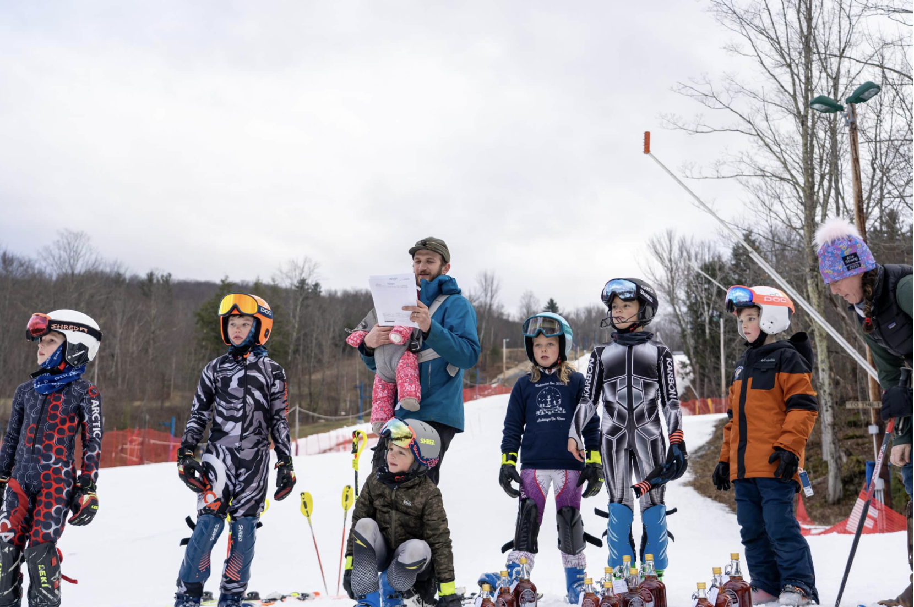
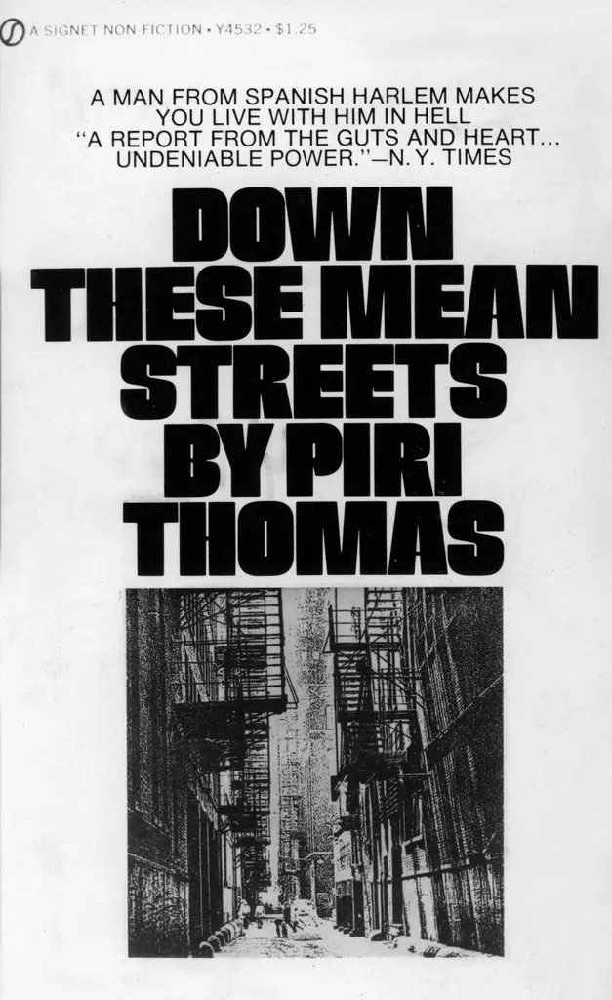

Writing Samples
Louise Filkorn is a distinguished professional writer with a talent to write in a variety of different styles and genres. Below are a few samples that demonstrate the diversity of her writing abilities. Each sample tackles a different topic range as well as style of writing.

Grant Proposal: Advancing Equity in Ski Racing
Proposal for a Statewide Subsidized Mountain Access Program for Young Athletes

Literary Analysis: Shadows of Identity
Piri Thomas’s Journey Through Race, Masculinity, and Self-Discovery